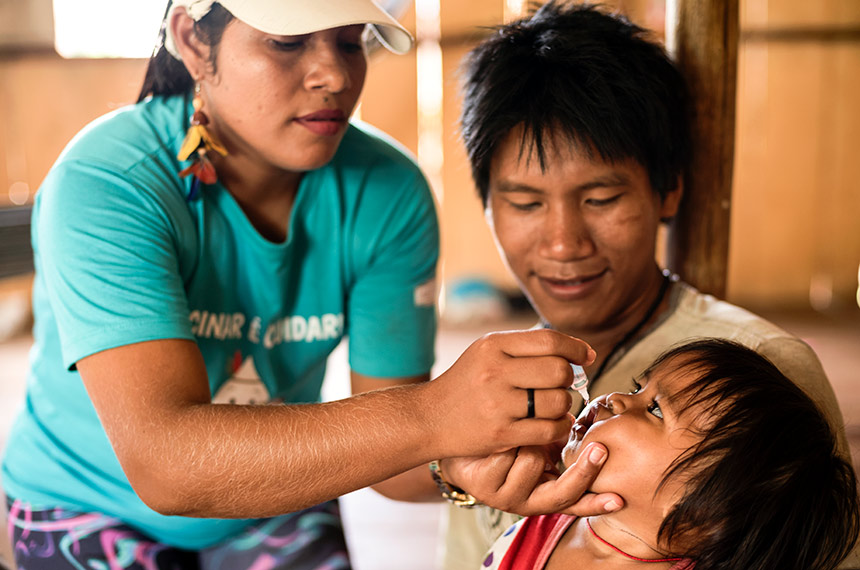
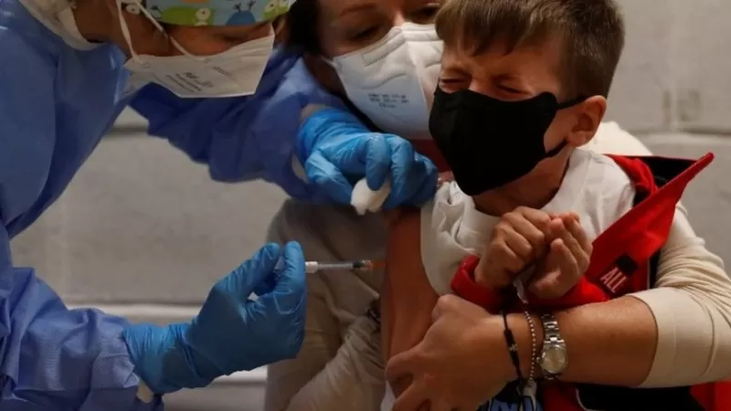
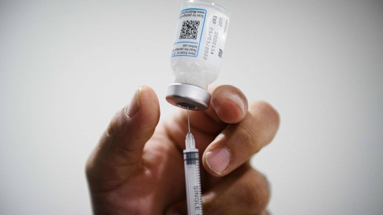
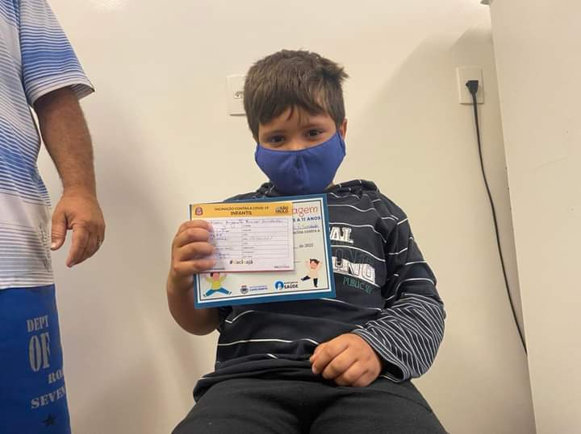
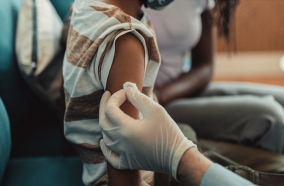
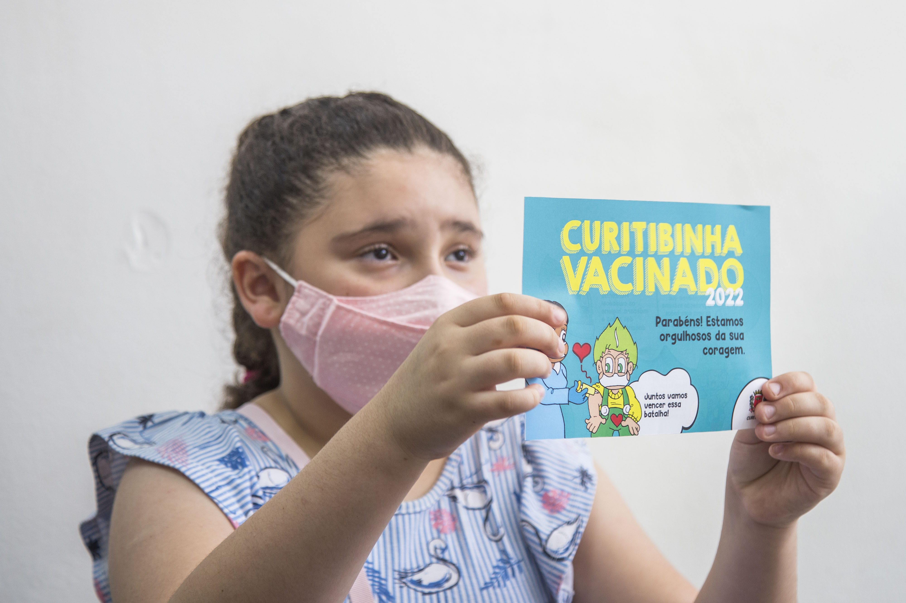

| Notícias | Fakenews | |
|---|---|---|

Vacinação infantil despenca no país e epidemias graves ameaçam voltar.Em terceiro lugar, porque a pandemia trouxe consigo uma avalanche de notícias falsas e informações distorcidas a respeito das recém-criadas... Fonte: Agência Senado |

6 perguntas sobre a vacinação em crianças, autorizada pela Anvisa no Brasil.A seguir, seis perguntas e respostas sobre o que se sabe da vacinação em crianças até agora, incluindo possíveis riscos e benefícios e como tem sido em outros países. Fonte: BBC |
|

Covid-19: Vacina da Pfizer tem alta eficácia em crianças a partir de 6 meses de idade.A Pfizer anunciou na segunda-feira que três doses da vacina infantil contra a Covid-19 demonstrou forte resposta imunológica, alta eficácia... Fonte: Extra Online |
Vídeo de pai desesperado é antigo, foi filmado no Amazonas e não tem relação com vacina.É falso um vídeo que circula no WhatsApp dizendo que “vacinação mata criança na Paraíba” e que as imagens mostram um “pai desesperado ao ver seu filho morto”... Fonte: Projeto Comprova |
|

SP ultrapassa 3 milhões de doses aplicadas contra a COVID-19 no público infantil.Mais de 67,7% das crianças de 5 a 11 anos de idade já iniciaram a vacinação Fonte: Site do Governo de SP |

Não há registro de mortes de crianças causadas por vacinas contra a covid-19 no Brasil.É falso que uma menina tenha morrido na Bahia após se vacinar contra a covid-19 como afirmam vídeos compartilhados em redes sociais… Fonte: Projeto Comprova |
|

Crianças não podem tomar a vacina contra a Covid-19 junto com outras vacinas.Portanto, é preciso esperar 15 dias entre a imunização contra Covid-19 e a aplicação de outras vacinas previstas para as faixas etárias, como o reforço da Tríplice Bacteriana (dTPa). Fonte: Ministério da Saúde |
Post tira documentos da Pfizer de contexto e engana ao sugerir que imunidade natural é suficiente para combater a covid-19.Documentos da Pfizer liberados pela agência americana FDA não afirmam que imunidade natural dispensa vacina… Fonte: Projeto Comprova |
|

Menos de 30% das crianças no Brasil tomaram a segunda dose contra a Covid-19.Em relação à primeira dose, esse percentual sobe para 60%. São Paulo, Piauí e Minas Gerais lideram o ranking de doses aplicadas. Fonte: CNN Brasil |
Post engana ao relacionar morte de criança com CoronaVac; investigação segue em aberto.É enganoso um post no Twitter que relaciona a morte de um menino de 10 anos no Rio de Janeiro à vacinação com a CoronaVac… Fonte: Projeto Comprova |